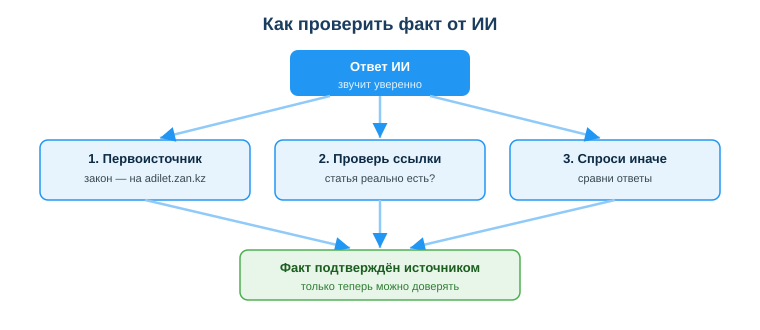
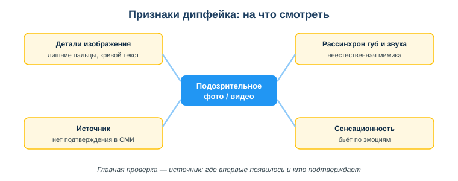

Занятие 36. Критическая оценка ИИ: достоверность и дипфейки
Дисциплина: Применение информационно-коммуникационных и цифровых технологий. Результат обучения: РО 2.3 — применение ИИ-инструментов · Объём темы: 2 часа. Квалификация: 4S06130103 «Разработчик программного обеспечения».
Это расширенный разбор темы для самостоятельного изучения. Он подробнее, чем конспект урока: здесь каждое понятие объясняется глубже, с примерами и пошаговыми разборами. Читай его как «учебник по теме» — после него ты не просто запомнишь, что «ИИ иногда врёт», а будешь точно знать, как поймать его на лжи, как за минуту проверить закон и как отличить настоящее фото от подделки. Это один из самых практичных навыков всего курса.
1. Введение: зачем тебе эта тема
Представь обычную ситуацию. Ты готовишь учебный проект, и тебе нужно сослаться на закон. Ты пишешь ИИ-ассистенту: «Дай закон РК об информатизации — номер, дату и нужную статью». Через секунду приходит идеально оформленный ответ: «Закон РК "Об информатизации" № 217-III от 11 января 2007 года, статья 14». Звучит солидно, реквизиты точные, тон уверенный. Ты копируешь это в работу, не задумываясь. А на защите преподаватель открывает adilet.zan.kz и показывает: закон об информатизации в Казахстане — это № 418-V от 24 ноября 2015 года. Тот номер и дата, которые тебе выдал ИИ, не существуют. Их никогда не было. ИИ их придумал — и сделал это так уверенно, что ты не усомнился.
Это не редкая поломка и не «глюк конкретной нейросети». Так устроены все большие языковые модели. ИИ умеет уверенно говорить неправду: выдумать факт, сослаться на несуществующую статью закона, назвать функцию языка программирования, которой нет, нарисовать фотографию человека, которого не существует, «озвучить» голос, который этого никогда не говорил. И всё это — без единого признака сомнения в голосе.
Отсюда вытекает главная мысль темы. В эпоху ИИ ключевой навык — это не «уметь спросить», а уметь не поверить на слово. Спрашивать умеют все. А вот проверять, отсеивать выдумку от факта, распознавать подделку — этому и нужно учиться, потому что именно от этого зависит, занесёшь ты в свой код, документ или новость ложь или нет.
Почему это важно лично тебе и твоей будущей работе? Потому что разработчик пользуется ИИ-подсказками постоянно: спрашивает про библиотеки, функции, синтаксис, требования законов о данных. Если ты примешь галлюцинацию ИИ за правду — ты внесёшь в код ошибку, которую потом будешь долго искать, или нарушишь требование закона, за которое отвечает уже не ИИ, а твоя компания. А ещё ты живёшь в мире, где дипфейки используют для мошенничества: поддельным «голосом» сына выманивают деньги у родителей, фальшивым видео руководителя дают команду перевести деньги. Умение проверять — это защита твоих денег, твоей репутации и качества твоей работы. Это тема не про «теорию ИИ», а про то, как не быть обманутым.
2. Что ты узнаешь и чему научишься
После изучения темы ты сможешь:
- объяснять простыми словами, почему ИИ выдаёт ложь уверенным тоном (что такое галлюцинация и откуда она берётся);
- проверять любой факт от ИИ у первоисточника тремя способами: первоисточник, проверка ссылок, «спросить иначе»;
- за минуту проверять «закон РК», который назвал ИИ, на портале adilet.zan.kz;
- объяснять, что такое дипфейк, какие они бывают (фото, видео, аудио) и зачем их создают;
- распознавать признаки подделки: детали изображения, рассинхрон губ и звука, источник, сенсационность;
- применять главное правило защиты — «сначала проверь источник, потом доверяй и делись».
3. Ключевые понятия
- Галлюцинация ИИ — выдуманный, но убедительно звучащий ответ модели: несуществующий закон, фальшивая цитата, ссылка на статью, которой нет [4].
- Большая языковая модель (LLM) — модель, которая предсказывает наиболее вероятное продолжение текста, а не хранит и не проверяет факты.
- Первоисточник — официальный источник, где факт можно подтвердить (для законов РК — adilet.zan.kz; для функций языка — официальная документация).
- Дипфейк — поддельные фото, видео или аудио, созданные ИИ: чужое лицо на видео, фальшивый голос, «фото» несуществующего события [3; 5].
- Дезинформация — заведомо ложная информация, распространяемая, чтобы ввести в заблуждение.
- Медиаграмотность — умение критически оценивать информацию и её источники [3].
- Критическое мышление — привычка не принимать утверждение на веру, а проверять его обоснованность [4].
4. Подробная теория
4.1. Почему ИИ уверенно ошибается: природа галлюцинаций
Чтобы научиться ловить ИИ на лжи, надо сначала понять, почему он лжёт. И тут есть один контринтуитивный, но ключевой факт: ИИ не «знает» факты. Он предсказывает текст.
Большая языковая модель (это и есть «движок» ChatGPT, Gemini, Copilot и подобных) обучена на огромном количестве текстов. Её задача при ответе — не «вспомнить правду из базы данных», а подобрать наиболее вероятное продолжение твоего запроса, слово за словом. Представь себе очень мощную версию подсказки на клавиатуре телефона: ты пишешь «Закон РК об информатизации номер...», а модель достраивает самым правдоподобным с виду продолжением. Если в её «опыте» рядом с такими словами часто встречались номера и даты определённого вида — она их и выдаст. Совпадут ли они с реальностью? Как повезёт. Модель не проверяет, она генерирует похожее на правду.
Вот почему галлюцинации звучат так убедительно. Это и есть их природа: модель создаёт текст, который выглядит как правда, а не текст, который является правдой. Правдоподобие и истинность — это разные вещи, и ИИ оптимизирован именно под первое.
Главное понятие темы:
Галлюцинация ИИ — выдуманный, но убедительно звучащий ответ: несуществующий закон, фальшивая цитата, ссылка на статью, которой нет. ИИ не «знает» факты — он предсказывает правдоподобный текст, поэтому выдумка звучит так же уверенно, как правда.
Разберём, в каких случаях галлюцинации особенно вероятны, чтобы ты заранее насторожился:
- Точные реквизиты: номера законов, статьи, даты, цифры статистики. Это самая опасная зона. Модели «не дорого» придумать правдоподобный номер, а тебе он кажется доказательством серьёзности. Любая конкретная цифра от ИИ — кандидат на проверку.
- Цитаты и авторство. ИИ легко «процитирует» книгу или человека словами, которых тот никогда не говорил, и припишет цитату не тому автору.
- Названия функций, библиотек, методов в коде. ИИ может назвать встроенную функцию, которой в языке нет (классический пример из занятия 01 — несуществующая «встроенная функция
is_prime()» в Python), потому что похожий код часто встречается.
- Ссылки и URL. ИИ нередко выдаёт правдоподобный, но «битый» или вовсе выдуманный адрес страницы.
- Свежие события. Модель обучалась на данных до определённой даты и про новое либо не знает, либо додумывает.
Запомни вывод, к которому всё сводится: уверенный тон ИИ — это не доказательство. Подробность, складность, идеально оформленные реквизиты — тоже не доказательства. Скорее наоборот: чем глаже и удобнее звучит ответ на фактический вопрос, тем внимательнее стоит его проверить. Это и есть переход от наивного пользователя к критически мыслящему — и к нему мы сейчас перейдём практически.
4.2. Как проверять факт от ИИ: три способа (читаем схему)
Совет «проверяй факты» бесполезен, пока ты не знаешь как именно. Поэтому посмотри на схему «Как проверить факт от ИИ» (приложение А, assets/36_shema-proverka-fakta.svg) — она задаёт весь алгоритм этого раздела.

Как читать схему. В самом верху стоит синий блок «Ответ ИИ — звучит уверенно». Это исходная точка: у тебя на руках ответ, который выглядит правдой. От него вниз расходятся три стрелки — это три способа проверки. Все три ведут к нижнему зелёному блоку «Факт подтверждён источником — только теперь можно доверять». Логика схемы прямая и важная: доверять можно не сразу после ответа ИИ, а только после прохождения проверки. Зелёный цвет внизу — это и есть «разрешение доверять», и до него надо ещё дойти.
Разберём каждый из трёх способов подробно.
Способ 1. Сверь с первоисточником. Это главный и самый надёжный приём. Первоисточник — это официальное место, где факт «живёт по-настоящему»:
- закон РК — это adilet.zan.kz (об этом подробно в 4.3), а не «слова ИИ»;
- функция или метод языка программирования — официальная документация (docs.python.org, MDN, pandas.pydata.org);
- статистика, новость — сайт ведомства, официальный пресс-релиз, признанное издание.
Принцип такой: ИИ может помочь тебе быстрее найти черновик ответа, но подтверждение всегда берётся не у ИИ, а у первоисточника. Если в первоисточнике факта нет — значит, ИИ его выдумал.
Способ 2. Проверь ссылки. Если ИИ дал ссылку или назвал конкретную статью — не верь самому факту её существования. Сделай так:
- открой ссылку в браузере — открывается ли она вообще, не «404 ли»;
- проверь, что страница про то самое — совпадает ли её содержание с тем, что ИИ приписал ссылке (бывает, ссылка рабочая, но про другое);
- сверь с другими источниками — упоминается ли эта статья/страница ещё где-то.
Битая или «не про то» ссылка — почти верный признак галлюцинации.
Способ 3. Спроси иначе. Это приём на случай, когда первоисточник под рукой не сразу. Задай тот же вопрос по-другому, в другой формулировке, можно в новом диалоге. Если ИИ уверен в факте — ответы совпадут. Если он «галлюцинирует» — формулировки начнут расходиться: то один номер закона, то другой, то одна дата, то другая. Расхождение ответов — это сигнал, что ИИ не уверен и, скорее всего, выдумывает. Этот способ не заменяет первоисточник, но быстро отсеивает явную выдумку.
И четвёртый, неформальный фильтр поверх всех трёх — здравый смысл. Слишком гладко, слишком удобно, слишком точно «как по заказу»? Насторожись. Реальность обычно чуть менее причёсана, чем выдумка модели.
Объедини всё в практический алгоритм, который применяй к любому важному факту от ИИ:
- Выдели в ответе факты, требующие проверки — номера, даты, цифры, цитаты, названия функций, ссылки.
- Найди первоисточник для каждого (закон → adilet.zan.kz, функция → документация, новость → официальное издание).
- Открой и сверь — есть ли факт там, совпадают ли реквизиты.
- Если первоисточник недоступен — спроси ИИ иначе и сравни ответы.
- Прими решение: подтвердилось — используй; не нашёл или есть расхождение — не используй, ищи дальше.
4.3. Практикум: проверяем «закон РК» на adilet.zan.kz
Раз тема началась с выдуманного закона, разберём этот случай в деталях — он самый частый и для будущего разработчика самый важный (ты постоянно будешь иметь дело с требованиями к данным и к ПО).
Где проверять. Официальная справочно-правовая система Республики Казахстан — это портал adilet.zan.kz («Әділет», информационно-правовая система нормативных правовых актов РК). Здесь публикуются законы в актуальной редакции. Это и есть первоисточник для любого «закона РК», который называет ИИ. Дополнительно проверке посвящено отдельное занятие 16 курса (справочно-правовые системы) — там ты освоишь поиск ещё глубже.
Пошаговый алгоритм проверки закона, который назвал ИИ:
- Выпиши из ответа ИИ реквизиты: название закона, номер, дату принятия, статью (если её упомянули).
- Открой adilet.zan.kz.
- Найди закон по названию через поиск по сайту (например, «Об информатизации»).
- Сверь реквизиты: совпадает ли номер и дата с тем, что выдал ИИ. Для закона об информатизации правильные реквизиты — № 418-V от 24.11.2015. Если ИИ назвал другой номер или дату — это галлюцинация.
- Проверь статью: открой закон и найди статью, на которую сослался ИИ. Существует ли она? О том ли она, что утверждал ИИ? Бывает, закон реальный, а статья выдумана или говорит о другом.
- Вывод: реквизиты есть и совпадают → можно использовать со ссылкой на adilet.zan.kz. Не нашёл / расходится → ИИ выдумал, факт не используем.
Полезно знать «опорные точки» — несколько реальных законов РК, которые встречаются в курсе, чтобы сразу замечать подмену:
- Закон РК «Об информатизации» — № 418-V от 24.11.2015 (
adilet.zan.kz/rus/docs/Z1500000418) [1];
- Закон РК «О персональных данных и их защите» — № 94-V от 21.05.2013 (
adilet.zan.kz/rus/docs/Z1300000094) [2].
Эти два закона прямо касаются работы разработчика с данными, поэтому их реквизиты стоит запомнить — тогда выдуманный ИИ номер ты заметишь мгновенно, ещё до проверки.
4.4. Что такое дипфейк и зачем его создают
Вторая половина темы — про подделки уже не текста, а изображений, видео и звука. Здесь работает та же логика, что и с галлюцинациями: ИИ умеет создавать правдоподобное, а не настоящее, только теперь это касается лиц и голосов.
Дипфейк — поддельные фото, видео или аудио, созданные ИИ: лицо одного человека на чужом видео, фальшивый голос, «фотография» события, которого не было.
Слово «дипфейк» (от англ. deep learning — глубокое обучение, и fake — подделка) означает медиаконтент, синтезированный нейросетью так, что его трудно отличить от реального. Бывают три основных вида:
- фото — несуществующий человек или реальный человек в ситуации, в которой он не был;
- видео — чужое лицо «надето» на другого человека, или человек «говорит» слова, которых не произносил;
- аудио — синтезированный голос конкретного человека, повторяющий любой текст.
Зачем их создают — и почему это касается тебя:
- Мошенничество. Классическая схема: тебе звонит «голос» родственника или начальника и срочно просит перевести деньги. Голос настоящий на слух, но это синтез. Известны случаи перевода крупных сумм по «видеозвонку» с поддельным руководителем.
- Дезинформация. Фальшивое видео или фото «события», чтобы посеять панику, повлиять на мнение людей, исказить картину происходящего [3].
- Подрыв репутации. Поддельное видео или фото, компрометирующее конкретного человека.
Главная опасность дипфейков в том, что они эксплуатируют наше доверие: «я же своими глазами видел», «я узнал голос». Раньше фото и голос были доказательством — теперь это не так. Поэтому к видео и аудио нужно относиться так же критически, как к тексту от ИИ.
4.5. Признаки дипфейка: на что смотреть (читаем схему)
Теперь конкретика: как заподозрить подделку. Посмотри на схему «Признаки дипфейка: на что смотреть» (приложение Б, assets/36_shema-priznaki-dipfeyka.svg).

Как читать схему. В центре — синий блок «Подозрительное фото / видео». От него линиями расходятся четыре жёлтых блока-признака (жёлтый — цвет «внимание, проверь»): «Детали изображения», «Рассинхрон губ и звука», «Источник», «Сенсационность». А внизу курсивом — главный вывод: «Главная проверка — источник: где впервые появилось и кто подтверждает». То есть четыре признака помогают заподозрить подделку, но окончательная защита — проверка источника. Запомни эту иерархию: признаки → подозрение → проверка источника → решение.
Важная оговорка перед разбором: ни один признак не является стопроцентным доказательством. Технологии быстро улучшаются, и «лишние пальцы» через год могут исчезнуть. Признаки — это повод насторожиться и пойти проверять источник, а не приговор. Разберём каждый.
Признак 1. Детали изображения. Нейросети до сих пор плохо справляются с мелкими деталями, потому что «не понимают», что рисуют, а лишь воспроизводят узнанные образы. На что смотреть:
- руки и пальцы — лишние или недостающие пальцы, неестественно изогнутые, «слипшиеся»;
- уши, зубы, глаза — асимметрия, странная форма, неестественные блики;
- фон — «плывущие», искажённые объекты, нелогичная геометрия, повторяющиеся узоры;
- текст на изображении — кривые, нечитаемые буквы на вывесках, табличках, документах (нейросети часто «не умеют» писать осмысленный текст);
- украшения, очки, швы одежды — оплавленные, несимметричные, обрывающиеся.
Признак 2. Рассинхрон губ и звука, неестественная мимика. Это про видео:
- губы не совпадают со звуком — артикуляция отстаёт или опережает речь;
- неестественное моргание — слишком редкое, слишком частое или его почти нет;
- «замороженная» или дёрганая мимика, странные переходы выражения лица;
- края лица — мерцание, размытие, «шов» на границе лица и фона, особенно при повороте головы.
Признак 3. Источник. Самый надёжный из признаков: откуда вообще взялся материал?
- кто первым опубликовал; есть ли первоисточник или это «переслали из чата»;
- подтверждают ли надёжные СМИ — если шокирующее видео настоящее, о нём почти наверняка написали бы крупные издания;
- нет подтверждения нигде, кроме анонимных пабликов и пересылок — сильный повод не верить.
Признак 4. Сенсационность. Подделки часто специально делают шокирующими — чтобы человек среагировал эмоцией и репостнул, не думая:
- контент бьёт по эмоциям (страх, гнев, восторг), подталкивает «срочно поделиться»;
- слишком «удобно» подтверждает чьи-то взгляды или, наоборот, слишком громко их разрушает;
- правило простое: чем сильнее контент провоцирует эмоцию и желание мгновенно поделиться — тем больше причин сначала проверить.
4.6. Защита через проверку источника
Сведём защиту в одну главную идею, которую подсказывают обе схемы и весь урок: главная защита — это проверка источника. Признаки помогают заподозрить, но решает вопрос «откуда это и кто это подтверждает».
Почему именно источник, а не «насмотренность на лишние пальцы»? Потому что технические артефакты исчезают по мере улучшения ИИ, а вопрос происхождения работает всегда. Даже у идеально сделанного дипфейка нет настоящего первоисточника и нет подтверждения у независимых надёжных изданий.
Практический алгоритм проверки источника (применяй к любому фото/видео/новости, которые вызвали сильную реакцию):
- Стоп — не делись сразу. Сильная эмоция — это сигнал притормозить, а не репостить.
- Найди первоисточник — кто и где опубликовал это впервые.
- Проверь подтверждение — пишут ли об этом надёжные, независимые издания; есть ли несколько независимых подтверждений.
- Осмотри сам материал по признакам из 4.5 (детали, рассинхрон, мимика).
- Прими решение: подтверждено надёжными источниками → можно доверять и при необходимости делиться; не подтверждено → не делись, относись как к возможной подделке.
Дополнительный приём для фото — обратный поиск изображения: загрузить картинку в поиск по изображениям и посмотреть, где она появлялась раньше и в каком контексте (часто «новое сенсационное фото» оказывается старым снимком из другого события). Навыки оценки достоверности источников отдельно отрабатываются в занятии 11 курса.
Цифровые метки происхождения. Современный и всё более важный инструмент — технические метки, встроенные в сам файл. Стандарт C2PA / Content Credentials записывает в метаданные историю: кто и каким инструментом создал или изменил материал и использовался ли ИИ. Генеративные модели добавляют и невидимые водяные знаки (например, Google SynthID). К 2026 году такие метки стали массовыми, и проверка Content Credentials — это способ узнать происхождение контента, не полагаясь только на «глаз».
4.7. Дипфейки и закон РК
С 18 января 2026 года дипфейки и любой синтетический контент в РК прямо регулирует Закон «Об искусственном интеллекте» (№ 230-VIII от 17.11.2025). Что важно знать:
- синтетические результаты (созданные или изменённые ИИ изображения, видео, аудио, тексты, имитирующие внешность, голос, поведение человека или несуществующие события) разрешено распространять только с маркировкой в машиночитаемой форме и с видимым предупреждением;
- запрещены системы ИИ, которые манипулируют поведением человека или причиняют вред, в том числе через имитацию личности без согласия;
- ответственность за маркировку и за информирование пользователей закон возлагает на собственника или владельца системы ИИ.
Для тебя как будущего разработчика это значит: если твой продукт генерирует контент, ты обязан его маркировать; а создание дипфейка человека без его согласия — это уже нарушение закона, а не «безобидная шутка».
4.8. Почему это профессиональная ответственность разработчика
Может показаться, что проверка фактов и дипфейков — это «про новости», а не «про код». На самом деле это прямая часть твоей будущей профессии.
- Код. Ты постоянно спрашиваешь ИИ про функции, библиотеки, синтаксис. Принять галлюцинацию (несуществующую функцию, неверный параметр) за правду — значит внести ошибку, которую потом долго ищешь. Проверка по официальной документации — твоя страховка.
- Закон и данные. Разработчик работает с персональными данными и обязан соблюдать закон. Если ИИ назвал «требование закона», а ты не проверил его на adilet.zan.kz, ты рискуешь нарушить реальный закон, опираясь на выдуманный. Отвечать будет компания, а не ИИ [2].
- Контент и продукт. Если твой продукт показывает пользователям информацию или медиа, а ты не выстроил проверку источников, через продукт может пойти дезинформация — и это уже репутация компании.
Главный принцип, который должен остаться с тобой: ответственность за применённый результат лежит на человеке, а не на инструменте. ИИ не отвечает ни за выдуманный закон, ни за репостнутый дипфейк — отвечает тот, кто это применил или распространил. Поэтому проверка — не лишняя осторожность, а часть профессии. Это продолжение человекоцентричного подхода из занятия 01: ты остаёшься ответственным, а ИИ — лишь помощником.
5. Разобранные примеры и мини-кейсы
Пример 1 — выдуманный закон (галлюцинация фактов). Студент попросил ИИ дать «закон РК о чём-то» с номером и датой. ИИ выдал убедительный номер. Студент вставил его в работу.
Разбор: это классическая галлюцинация (4.1). ИИ предсказал правдоподобные реквизиты, а не нашёл реальный закон. Проверка на adilet.zan.kz по алгоритму 4.3 сразу показала бы: такого закона нет. Урок — даже точные на вид реквизиты проверяй у первоисточника, а не доверяй уверенному тону.
Пример 2 — ссылка, которая «не про то». ИИ подтверждает факт и даёт URL «официального источника». Студент видит, что ссылка рабочая, и успокаивается.
Разбор: ссылка открылась, но это способ проверки № 2 наполовину. Надо было сверить содержание страницы с утверждением ИИ. Открыв её внимательно, студент увидел бы, что страница про другое, а нужного факта там нет. Рабочая ссылка ≠ подтверждённый факт.
Пример 3 — шокирующее видео в соцсети (дипфейк/дезинформация). В мессенджере распространяется шокирующее видео из «непроверенного» источника. Хочется сразу переслать, чтобы предупредить друзей.
Разбор: сработала ловушка сенсационности (признак 4) и желание мгновенно поделиться. Правильно — остановиться, проверить источник (4.6): кто опубликовал первым, подтверждают ли надёжные СМИ. Нет подтверждения → не репостить. Мгновенный репост непроверенного делает тебя звеном в распространении дезинформации, и ответственность ложится на того, кто поделился.
6. Частые ошибки и как их избежать
Ошибка: «ИИ ответил уверенно и подробно — значит, правда».
Почему: ИИ генерирует правдоподобный текст, а не истину; уверенность — не доказательство.
Как правильно: относись к фактам от ИИ как к черновику от стажёра — проверяй у первоисточника.
Ошибка: проверять только, открывается ли ссылка.
Почему: ссылка может быть рабочей, но не про тот факт.
Как правильно: сверяй содержание страницы с утверждением ИИ.
Ошибка: считать «лишние пальцы» стопроцентным детектором дипфейка.
Почему: технологии улучшаются, артефакты исчезают.
Как правильно: признаки — повод насторожиться, а решает проверка источника.
Ошибка: репостить шокирующее сразу, «чтобы предупредить».
Почему: так распространяется дезинформация, и отвечаешь за это ты.
Как правильно: сначала проверь источник — потом делись.
7. Памятка / практический алгоритм
Перед тем как поверить факту от ИИ или поделиться медиа:
- факт от ИИ (номер, дата, цитата, функция, ссылка) — сверь с первоисточником (закон → adilet.zan.kz, функция → документация);
- дал ссылку — открой и проверь содержание, не только «открывается ли»;
- сомневаешься — спроси иначе и сравни ответы; расхождение = выдумка;
- фото/видео вызвало сильную эмоцию — остановись, не делись сразу;
- осмотри по признакам (детали, рассинхрон, мимика) и проверь источник (кто опубликовал первым, подтверждают ли надёжные СМИ);
- подтвердилось у надёжного источника → можно доверять; нет → не используй и не делись.
8. Краткие итоги
- ИИ не знает факты, а предсказывает правдоподобный текст — поэтому может уверенно выдумать (галлюцинация).
- Уверенный тон, подробность и точные реквизиты — не доказательство; чем глаже, тем внимательнее проверяй.
- Проверяй факт тремя способами: первоисточник, проверка ссылок, «спросить иначе».
- «Закон РК» от ИИ всегда сверяй на adilet.zan.kz по реквизитам и статье.
- Дипфейк — поддельные фото/видео/аудио; признаки: детали изображения, рассинхрон губ и звука, источник, сенсационность; всё важнее — цифровые метки происхождения (C2PA/SynthID).
- По Закону РК «Об искусственном интеллекте» (№ 230-VIII) синтетический ИИ-контент нужно маркировать, а дипфейки людей без согласия запрещены.
- Признаки лишь помогают заподозрить — главная защита — проверка источника.
- За применённый результат и за репост отвечает человек, а не ИИ; «сначала проверь — потом доверяй и делись».
9. Вопросы для самопроверки
- Почему ИИ может уверенно выдать ложный факт? Что такое галлюцинация и откуда она берётся?
- Назови три способа проверки факта от ИИ и объясни, чем они отличаются.
- Опиши по шагам, как проверить «закон РК», который назвал ИИ, на adilet.zan.kz.
- Почему рабочая ссылка ещё не означает, что факт подтверждён?
- Что такое дипфейк? Назови три его вида и зачем их создают.
- Перечисли четыре признака дипфейка. Почему ни один из них не является стопроцентным доказательством?
- Почему главная защита от дипфейков — это проверка источника, а не разглядывание деталей?
- Почему за репост непроверенного видео отвечаешь именно ты, а не ИИ?
10. Глоссарий
- adilet.zan.kz (Әділет) — официальная справочно-правовая система РК; первоисточник для проверки законов.
- Большая языковая модель (LLM) — модель, предсказывающая вероятное продолжение текста; не хранит и не проверяет факты.
- Галлюцинация ИИ — выдуманный, но убедительно звучащий ответ модели (несуществующий закон, цитата, ссылка).
- Дезинформация — заведомо ложная информация, распространяемая для введения в заблуждение.
- Дипфейк — поддельные фото, видео или аудио, синтезированные ИИ.
- Критическое мышление — привычка проверять утверждения, а не принимать их на веру.
- Медиаграмотность — умение критически оценивать информацию и её источники.
- Обратный поиск изображения — поиск по картинке, чтобы узнать, где и когда она появлялась раньше.
- Первоисточник — официальное место, где факт можно подтвердить (закон → adilet.zan.kz, функция → документация).
- Рассинхрон губ и звука — несовпадение артикуляции и речи в видео, признак подделки.
- Сенсационность — приём подделок: шокирующий контент, провоцирующий мгновенный репост.
11. Источники и что почитать для углубления
Основная литература:
- Кобдикова Ж. Информационно-коммуникационные технологии. — 2019 (разделы об оценке достоверности информации и работе с источниками).
- Шыныбеков Д.А., Ускенбаева Р.К. Информационно-коммуникационные технологии. — Алматы, 2017 (главы об информации и информационной безопасности).
Дополнительно:
- Брыксина О.Ф., Пономарёва Е.А., Сонина М.Н. ИКТ в образовании. — М.: ИНФРА-М, 2024 (разделы о медиаграмотности и критическом мышлении).
Нормативные источники РК:
- Закон РК «Об информатизации» от 24.11.2015 № 418-V — https://adilet.zan.kz/rus/docs/Z1500000418
- Закон РК «О персональных данных и их защите» от 21.05.2013 № 94-V — https://adilet.zan.kz/rus/docs/Z1300000094
Электронные ресурсы:
Международные рамки:
- UNESCO. Media and Information Literacy / материалы по медиаграмотности и противодействию дезинформации — https://www.unesco.org/en/media-information-literacy
- UNESCO. AI Competency Framework for Students (2024) — раздел о критическом мышлении и ответственном использовании ИИ — https://www.unesco.org/en/articles/ai-competency-framework-students
- DigComp 2.2: The Digital Competence Framework for Citizens (JRC, ЕС) — область «Информационная грамотность и работа с данными» — https://publications.jrc.ec.europa.eu/repository/handle/JRC128415
12. Приложения
- Приложение А. Схема «Как проверить факт от ИИ» —
assets/36_shema-proverka-fakta.svg. Сверху — ответ ИИ, звучащий уверенно; от него три способа проверки (первоисточник на adilet.zan.kz, проверка ссылок, «спросить иначе»); внизу зелёным — «факт подтверждён источником, только теперь можно доверять». Доверять разрешается лишь после проверки.
- Приложение Б. Схема «Признаки дипфейка: на что смотреть» —
assets/36_shema-priznaki-dipfeyka.svg. В центре — подозрительное фото/видео, вокруг четыре признака (детали изображения, рассинхрон губ и звука, источник, сенсационность); внизу вывод: главная проверка — источник (где впервые появилось и кто подтверждает).
- Памятка для студента «Сначала проверь — потом доверяй и делись» — раздел 7.
Материал подготовлен на основе урока темы (urok.md) и приведённых в конце источников; он расширяет и углубляет содержание урока для самостоятельного изучения. Источники приведены главами и ссылками (без номеров страниц); нормативные акты — с реквизитами.
Материал разработан рабочей группой ТОО «Колледж Хекслет Казахстан» и одобрен к использованию в обучении решением Педагогического совета.